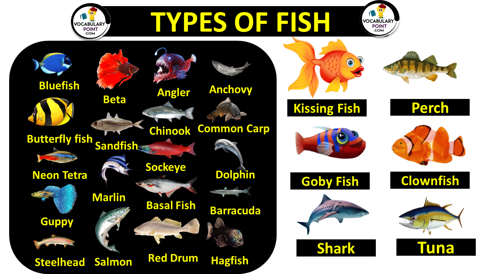
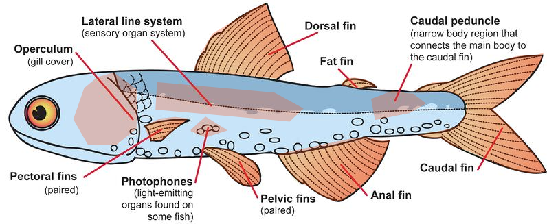

מבוא

דגים הם קבוצה מגוונת של בעלי חיים מימיים הממלאים תפקידים חיוניים במערכות אקולוגיות, בשרשרת המזון ובתרבות האנושית.
הם חולייתנים המאופיינים בזימים, סנפירים, ובדרך כלל חיים במים לאורך כל חייהם.
עם למעלה מ-34,000 מינים ידועים, דגים הם קבוצת החולייתנים המגוונת ביותר.
סיווג דגים
דגים מסווגים באופן כללי לשלוש קטגוריות עיקריות:
- דגי גרם (Osteichthyes): מייצגים למעלה מ-90% ממיני הדגים. כולל מינים כמו סלמון ודג זהב.
- דגי סחוס (Chondrichthyes): בעלי שלד העשוי מסחוס ולא מעצם. כולל כרישים וחתולי ים.
- דגים חסרי לסתות (Agnatha): דגים פרימיטיביים ללא לסתות, כגון צלופח ודג רירי.
בתי גידול של דגים
דגים שוכנים כמעט בכל סביבה מימית על פני כדור הארץ, החל מאגמים ונהרות מים מתוקים ועד לתעלות אוקיינוס עמוקות. סוגי בתי הגידול העיקריים כוללים:
- מים מתוקים: נהרות, אגמים, בריכות (לדוגמה: טרוטה, שפמנון).
- מי מלח: אוקיינוסים וימים (לדוגמה: טונה, שושנון).
- מים מליחים: תערובת של מים מתוקים ומלוחים, כמו שפכי נהרות (לדוגמה: מינים מסוימים של אמנון).
- ים עמוק: לחץ גבוה, ללא אור (לדוגמה: חכאי, פנסאי).
אנטומיה והתאמות של דגים
(ניתן ללחוץ על המקומות המסומנים לפרטים נוספים)
דגים מציגים מגוון של התאמות אנטומיות התומכות בהישרדותם בסביבות מימיות:
- מכסה זימים (operculum): דש גרמי המכסה ומגן על הזימים. הוא נפתח ונסגר כדי לאפשר למים לזרום מעל הזימים, מה שמאפשר נשימה.
- סנפירי חזה (זוגיים): זוג סנפירים הממוקמים בכל צד של הדג ממש מאחורי מכסה הזימים. הם עוזרים לדג לנווט, לשמור על שיווי משקל ולשמור על מיקום במים.
- פוטופורים: איברי פליטת אור הנמצאים בחלק מהדגים, במיוחד מיני ים עמוק. הם משמשים להסוואה, משיכת טרף או תקשורת.
- סנפירי אגן (זוגיים): ממוקמים בחלק התחתון של הדג, בדרך כלל מתחת לסנפירי החזה. הם עוזרים בייצוב הדג ובשליטה על תנועתו למעלה ולמטה.
- מערכת קו הצד (איבר חישה): שורה של איברי חישה העוברים לאורך צידי הדג. היא מזהה רעידות ותנועות במים, ועוזרת לדג לחוש את סביבתו ואורגניזמים אחרים.
- סנפיר גב: סנפיר הממוקם על גב (חלק עליון) הדג. הוא עוזר לשמור על הדג זקוף ומונע ממנו להתהפך.
- סנפיר שומן: סנפיר קטן ובשרני המצוי בין סנפיר הגב לסנפיר הזנב בחלק ממיני הדגים. תפקידו אינו מובן לחלוטין, אך ייתכן שהוא עוזר ביציבות.
- סנפיר שת: ממוקם בחלק התחתון של הדג מאחורי סנפירי האגן. הוא עוזר לייצב את הדג בזמן שחייה.
- פדונקל זנב: החלק הצר של גוף הדג המחבר את הגוף הראשי לסנפיר הזנב. הוא ממלא תפקיד בתנועה ובגמישות הזנב.
- סנפיר זנב: סנפיר הזנב מספק דחף, ומאפשר לדג לנוע קדימה. הוא גם עוזר בהיגוי ובבקרת מהירות.
טבלת השוואה של סוגי דגים
| סוג | מבנה שלד | בית גידול | דוגמא למין | מאפיינים מיוחדים |
|---|---|---|---|---|
| דגי גרם | עצם | מים מתוקים ומים מלוחים | סלמון | שלפוחית שחייה, קשקשים |
| דגי סחוס | סחוס | מי מלח | כריש | שיניים חדות, ללא שלפוחית שחייה |
| דגים חסרי לסתות | סחוס | מים מתוקים ומים מלוחים | חכאי | ללא לסתות, הגנת ריר |